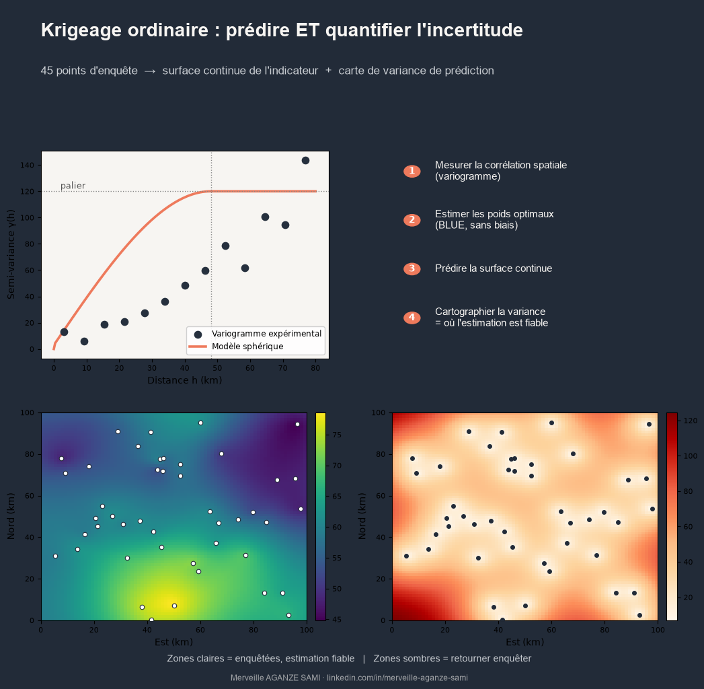

A survey design rarely covers an entire territory. A few dozen measurement points are distributed across thousands of square kilometres, and the question arises immediately: what can be asserted about the indicator between those points, where no one has been?
Two common answers have known weaknesses. The mean per administrative unit smooths internal variation that may be considerable and assumes a homogeneity rarely verified. Inverse distance weighting (IDW), though finer, relies on an arbitrarily chosen exponent and provides no indication of the reliability of its estimates.
Kriging, formalised by Georges Matheron from the mining work of Danie Krige (Krige, 1951) (Matheron, 1963), offers an alternative whose main value lies less in prediction quality than in the explicit quantification of its uncertainty.
1. The variogram: describing structure before predicting
Kriging differs from deterministic interpolators in that it begins by estimating the spatial structure of the variable rather than postulating it. This step rests on the experimental variogram, which plots semi-variance between pairs of points against the distance separating them. Dissimilarity generally increases with distance, then levels off.
Three parameters summarise this curve. The range is the distance beyond which two measurements are no longer correlated. The sill is the variance reached at that distance. The nugget effect denotes the discontinuity at the origin, attributable to very short-range variability and measurement error. A theoretical model — spherical, exponential or Gaussian — is fitted to this cloud of points, and it is this model that will determine the weights (Oliver & Webster, 2014).
Practical condition. Fitting a reliable variogram requires a sufficient number of point pairs. The literature generally recommends a minimum on the order of 100 to 150 observations; below that, the estimated structure becomes unstable and kriging loses its advantage over simpler methods (Webster & Oliver, 2007).
2. Prediction and its variance
Once the variogram model is selected, ordinary kriging estimates the value at any unsampled location as a linear combination of neighbouring observations. Weights are determined so as to minimise the estimation error variance subject to an unbiasedness constraint — hence the description "best linear unbiased predictor" (Cressie, 1993).
The second output is what genuinely distinguishes the method: the kriging variance. Computed at every location, it produces an uncertainty map that reads directly — expected estimation error is low near measurement points and increases with distance from them.
This map has immediate operational value. It indicates where results can be communicated with confidence, and where an additional measurement campaign would yield the most information. Sampling design thereby becomes iterative and grounded in an explicit criterion (Goovaerts, 1997).
3. Assumptions and limitations
Ordinary kriging rests on assumptions that should be verified rather than presumed.
- Stationarity. The method assumes that spatial structure is comparable across the domain. Where a marked trend exists — an elevation gradient, for instance — universal kriging or kriging with external drift is more appropriate.
- Distribution. Strongly skewed values degrade variogram fitting. A prior transformation, logarithmic or Gaussian anamorphosis, is then required, with the precautions that back-transformation entails.
- Smoothing. Like any estimator minimising error variance, kriging attenuates extremes. Where variability is itself the object of interest, conditional geostatistical simulation is preferable to estimation.
- Data support. Interpolating indicators from cluster surveys assumes the point value is meaningful at the scale of prediction; this assumption is not always defensible.
4. Validation
Leave-one-out cross-validation constitutes the minimum control: each observation is removed in turn, predicted from the others, and the discrepancy recorded. Two quantities warrant examination — root mean square error, which measures accuracy, and the standardised error, whose standard deviation should approach unity if the kriging variance is correctly calibrated. A standardised error consistently above 1 signals underestimation of uncertainty.
Key points
- Kriging first estimates spatial structure (variogram) before predicting
- Range, sill and nugget summarise that structure and determine the weights
- The prediction variance map is the method's distinctive output
- The stationarity assumption must be checked; where a trend exists, other variants apply
- Cross-validation controls both accuracy and the calibration of uncertainty
A useful spatial model does more than produce a continuous surface. It indicates where its own estimate is fragile — and that information often guides decisions more than the value map itself.
References
- Cressie, N. (1993). Statistics for Spatial Data (rev. ed.). New York: Wiley. doi.org/10.1002/9781119115151
- Goovaerts, P. (1997). Geostatistics for Natural Resources Evaluation. New York: Oxford University Press.
- Krige, D. G. (1951). A statistical approach to some basic mine valuation problems on the Witwatersrand. Journal of the Chemical, Metallurgical and Mining Society of South Africa, 52(6), 119–139.
- Matheron, G. (1963). Principles of geostatistics. Economic Geology, 58(8), 1246–1266. doi.org/10.2113/gsecongeo.58.8.1246
- Oliver, M. A., & Webster, R. (2014). A tutorial guide to geostatistics: Computing and modelling variograms and kriging. Catena, 113, 56–69. doi.org/10.1016/j.catena.2013.09.006
- Webster, R., & Oliver, M. A. (2007). Geostatistics for Environmental Scientists (2nd ed.). Chichester: Wiley. doi.org/10.1002/9780470517277

Merveille Aganze Sami
MEL & Database Management Advisor. 9+ years of experience in monitoring & evaluation, GIS and digitalization with international organizations (GIZ, Enabel) in DR Congo.
Point data to spatialise rigorously?
Get in touch